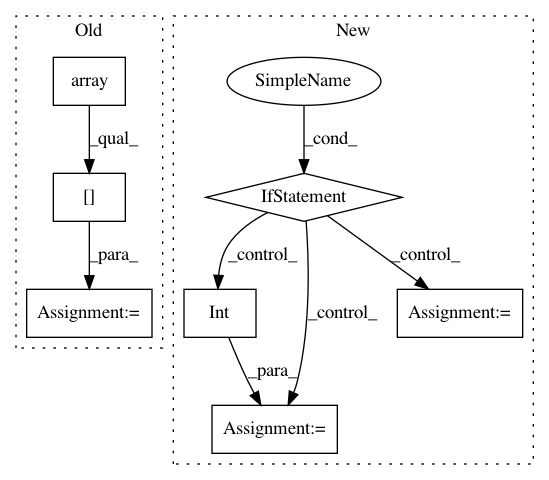

a9ab114eb64600dc6d5e297e2202e529ce2b5006,ggplot/geoms/stat_smooth.py,stat_smooth,plot_layer,#stat_smooth#Any#,13
Before Change
x = np.array(x)[idx]
y = np.array(y)[idx]
y1 = np.array(y1)[idx]
y2 = np.array(y2)[idx]
plt.plot(x, y, **layer)
if se==True:
plt.fill_between(x, y1, y2, alpha=0.2, color="grey")
After Change
span = layer.pop("span")
else:
span = 2/3.
if "window" in layer:
window = layer.pop("window")
else:
window = int(np.ceil(len(x) / 10.0))
if "level" in layer:
level = layer.pop("level")
else:
level = 0.95
In pattern: SUPERPATTERN
Frequency: 3
Non-data size: 7
Instances
Project Name: has2k1/plotnine
Commit Name: a9ab114eb64600dc6d5e297e2202e529ce2b5006
Time: 2014-02-12
Author: bwillers@gmail.com
File Name: ggplot/geoms/stat_smooth.py
Class Name: stat_smooth
Method Name: plot_layer
Project Name: acoular/acoular
Commit Name: 276f8fc3fe9a7424bae6585ed4453190e2a70815
Time: 2018-05-02
Author: tom.j.gensch@campus.tu-berlin.de
File Name: acoular/fbeamform.py
Class Name: PointSpreadFunction
Method Name: _get_psf
Project Name: acoular/acoular
Commit Name: 4b8dec5e7199ad302c52bf9eb6914a170491334c
Time: 2018-05-03
Author: tom.j.gensch@campus.tu-berlin.de
File Name: acoular/fbeamform.py
Class Name: PointSpreadFunction
Method Name: _get_psf